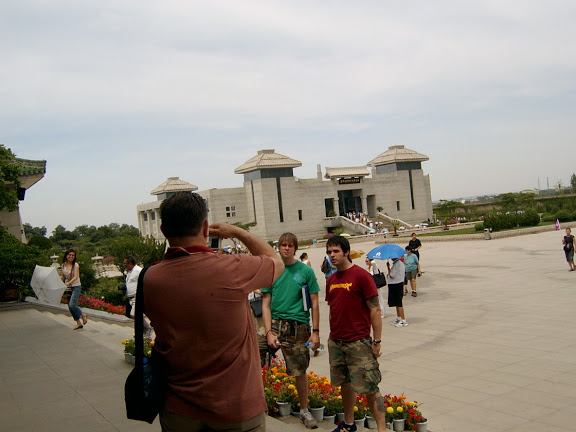

Learn while exploring five most
renowned and beautiful Chinese Cities
renowned and beautiful Chinese Cities
First, a news article on study abroad in China
China grows as study hotspot for U.S. students by Margo Buchanan (International Herald Tribune -- Dec 7, 2005)
Some participants wrote about their experiences and gave advice to those who are planning to make a Study Abroad trip to China . Here are comments made by the students, with no additions or deletions:
One student at CUNY MaCaulay Honors college wanted to share this:
http://macaulay.cuny.edu/eportfolios/bcchina/
The CUNY-Brooklyn College study abroad program is a unique opportunity to explore China's history and contemporary culture and society over the winter or summer break. The journey will take you through millennium of Chinese history in Beijing, the PRC's capital as well as the former capitals of Xi'an and Nanjing. You will see the lovely gardens of Yangzhou and Suzhou and walk in the metropolis of Shanghai. With the offering of various exciting courses that relate directly to Chinese history and culture the classroom and the country will come alive to you during your weeks in Nanjing. You will meet many exciting new people and see another side of yourself as you grow as a cultured individual. The China trip led by Prof. Shuming Lu will be one of the highlights of your college years, if not your life.
The trip to China had three components: art, history and culture. We were exposed to traditional arts such as silk embroidery painting, cloisonné, jade sculpture and jewelry craft, the making of silk fabrics and clothing, lacquer ware. We visited factories and showrooms where these processes were explained and exhibited. The history component consisted of visits to historical monuments such as The Forbidden City, Tian'anmen Square, the remains of Chairman Mao, the site of the Nanjing Massacre. Through visiting these sites we came to understand certain facts about Chinese history.
One example of this is the surprising discovery that many people revere Chairman Mao, founder of the Chinese Communist Party because he restored the nation's dignity by making China a military power and preventing foreign invasions. The cultural component consisted of learning about the Chinese way of eating - using chopsticks, eating communally and the diverse types of food eaten. We also visited many gardens wherein the Yin and Yang principle of Chinese culture is seen. Many gardens are composed of "hard" rock formations contrasted against the "softness" of water - via lakes, streams and ponds.
Through comparative analysis of New York vs the Chinese cities that were visited, Beijing, Nanjing and Shanghai, I came to understand the differences between city life in the U.S. and city life in China . One major difference is that streets accommodate bicycles, motor bikes and scooters. These vehicles are licensed and considered a part of pedestrian traffic. They are used by professionals as well as non-professionals to get to work. As a result of this type of daily exercise as well as public dancing and exercise, the Chinese are much thinner and obesity is rare.
Overall, the trip was educational and informative. The accommodations were very good and the food was plentiful and healthy.
My study abroad trip to China was a very rich experience for me. Growing up in New York, I had always assumed and taken for granted that China would be very similar to Chinatown. Instead, I was pleasantly surprised to find a country full of beautiful and friendly people, rapidly developing cities, amazing architecture, peaceful gardens, and a tasty cuisine that varies from region to region. The most memorable part of the trip was interacting with the Chinese people. While there was a language barrier in many of the situations, the people were eager to help and often went above and beyond to make sure that needs were met. People were consistently patient with me, despite how fast-paced the culture is. I am already looking forward to making another trip to China so that I can continue to explore what China has to offer.
I have also made many new friends on this trip. Since we were such a large and diverse group of students, I learned not only about the richness and diversity of Chinese culture, but also about the different cultural backgrounds of the students who I was traveling with. I will never forget how much I have learned from them and the wonderful times we had together.
The Brooklyn College/CUNY trip to China 2005 was more than just a study abroad program it was a study of myself. By learning the Chinese culture and learning about the cultures of my ethnically diverse fellow trip mates I was led to deeper assess my own cultural identity. The trip consisted of forty-eight beautiful students from many different races, cultures and ethnicity and while studying China I was also learning about India, Africa, Dominican Republic, the Caribbean and all the other wonderful places that my trip mates were from.
 On this trip to China I decided on what I wanted to study in graduate school. Before this study abroad trip I didn’t even know if I wanted to go to graduate school but after visiting sites such as the Nanjing Massacre Museum I decided that I wanted to study Africana Studies in Graduate school and eventually work on creating a memorial for slavery in America . I have returned to America with new eyes and a wealth of knowledge that I could not have gained in a classroom.
On this trip to China I decided on what I wanted to study in graduate school. Before this study abroad trip I didn’t even know if I wanted to go to graduate school but after visiting sites such as the Nanjing Massacre Museum I decided that I wanted to study Africana Studies in Graduate school and eventually work on creating a memorial for slavery in America . I have returned to America with new eyes and a wealth of knowledge that I could not have gained in a classroom.
Visiting China and learning about their ancient secluded culture made me wonder what Africa would be like if the slave trade didn’t interrupt the African civilization. Africans across the Diaspora are disenfranchised and marginalized in cultures that they are forced to assimilate into and as a result our heritage and history have been distorted. Overall I believe that it is my duty or rather the duty of peoples of African decent to heal the mother continent by investigating their past and teaching the younger generation the truth.
I have been encouraging all my friends to take a study abroad trip or better yet take the trip to China . I have become more cognizant of intercultural communication and the societal norms that govern and affect communication, not just through reading a textbook but also through living the ideas discussed in the textbooks and later forming my own conclusions.
I have gained forty-six new friends and I have met a professor whose professionalism and passion for learning has left a lasting impression on me. Although I have learned a lot from this trip I am yet to overcome my biggest obstacle, learning to use the chopsticks
Thank you Professor Lu. You are wonderful!
The CUNY China-trip was absolutely fantastic. I was able to learn so much. It was especially great that we did not remain in one part of China . By traveling to various regions such as Beijing, Xi'an, Nanjing, Changzhou, and Shanghai, we received a more rounded image of Chinese society and culture.
It would have been nice to have had a course in Mandarin. However, China itself was our classroom. We were given the freedom to learn words and phrases that we found useful and apply them on a daily basis. Therefore, the absence of a Chinese language course was not an issue. Plus, we had random people who we encountered throughout the trip that tried their best to assist us with word acquisition and proper tone pronunciation. Also, after seeing the extent to which Chinese people know about their own history and how much history is actually visible in China , I would definitely consider taking a course in Chinese History. This, on the other hand, also made me wish that I had more knowledge of American history.
Another great part of the China trip was visiting the host family. To actually see the inside of a typical Chinese home, put what little knowledge of Chinese etiquette we had to the test, and be able to discuss our various views on American and Chinese culture, was an incredible experience. This experience could only be matched with meeting the students of Changzhou University. So much was learned about the life of Chinese students through this encounter.
Besides the learning experiences. I would have to say just being a Part of the group that went on the China trip was an amazing experience. I never thought I could feel so close to so many people of such diverse backgrounds. I had the opportunity to learn a great deal about myself as well as develop better social skills. I would definitely recommend this trip to anyone who is disciplined, capable or merely interested in being part of a group, interested in either Chinese language, culture, or history, and also willing to learn a bit about themselves.
The BC study abroad program in China is wonderful and truly unforgettable. I have never visited any of these places before so I was very excited to go. My favorites are the Great Wall and the Tomb of Terra Cotta Army. They are just amazing. I learned a lot about the Chinese history and culture. It is more than what you can learn in a classroom or reading textbook. I had so much fun during the trip. One of the best things about the trip is that I made many new friends. Everyone on the trip is really nice and awesome. They are the kind of friends that truly care and look out for you. All of us would hang out together everyday and become really close with each other. I never felt lonely or homesick because there are always people around you. I love Nanjing and Shanghai and I would love to go back there and visit them in the future.
Traveling to China was one of the greatest experiences in my life so far. I had no expectations of what life in China was going to be like, and I know that that made the experiences even more memorable. The history coupled with the reality of being in the place(s) that those historical events occurred, made my personal experiences greater than I could have ever imagined.
Having the chance to share and discover with a group of total strangers allowed me to see and experience the mystery of friendship and the power of unity. Building memories with the strangers that have become my friend and seeing how much we had accomplished as a group was the most memorable part of my trip. Each time I think of China in my mind I see the faces of the people that shared an important part of my life with me.
Professor Lu, I would also like to take this opportunity to thank you for your hard work and planning that were devoted in making this trip a memorable one. Support was had from all sides, and I applaud your commitment and dedication to seeing that we had an enjoyable time. Thank you.
My China experience was indeed great one, and since this was my second time around, everything was enhanced. I think the most memorable part of the trip was when students interacted in our 'dormitories'. Each night something interesting happened there were no boring nights. Whether it is catching a movie, hanging out, finding out way to the host family, preparing to go to Scarlet or even doing school work, there was tons of fun involved. The beauty of the program is that it created a perfect blend of scholastic and travel into a one month time period. I believe China left a very strong impression on most people, including myself and hope that one day some of us will be able to make it back again.
Hello Prof. Lu, I would like to thank you for accepting me into this program and making this trip memorable. This study abroad, I would say, was kind of stressful for me in the beginning but I am very glad to experience it all because my perspective about China has definitely changed. I actually learned so much in so little time than I would have never done it with books. If there could be changes done to the trip such as staying longer in Shanghai and studying there instead of Nanjing (since we didn’t study in the Uni. we could just study in some other city), I think then the trip most likely would become very popular among other trips and attract new and old members. Once again, thank you for making this trip possible for me and others, and I wish you upcoming a Happy Chinese New Years!
I am glad that I was a part of the study abroad program in china 05-06. I met a lot of interesting people, lived and learned in china. I experienced the culture first hand. There is nothing more rewarding than being a part of such a diverse group. I was out of my comfort zone a lot and I was challenged to live and think outside the box. I even left the program with new friends that I would have not been friends with if not for this trip. Learning about the Chinese history through the tours was a great idea. I even ended up falling in love a the Tang dynasty. Visiting the host family was another great idea because I got to see how a family lived and they were very welcoming. The visit made me realize that never judge or generalize people until you have lived in their own moccasins. Also interacting with the college students was also a great idea. I wished we spent more days with those students they were fun to be with. The people and the professor made this trip worth while. We compromised a lot and helped and loved each other like we were family. We also assimilated to our surroundings and respected the culture in which we lived it. This program was very safe and I would recommend it to anyone.
The Study Abroad program to China was an amazing experience. I enjoy every moment of it. The group of 40+ students was very friendly and nice; we got to know one another very well. We got to visit China ’s seven most beautiful cities; each city had their unique attractions. This program gave me a great experience academically and for myself personally, I would definitely join this program again and recommend it to anyone
This past winter was one of the most memorable months of my life. Going to China had always been a dream of mine and this dream came true recently. I had the chance to visit so many different cities in China in just one month. Also, the group setting was really interesting. It was amazing how a group of 48 diverse students soon bonded and some started friendships that may last a lifetime. I was changed as a person and believe that the lessons I have learned in China , whether educational or social will help me in the future.
Studying Abroad in China was by far one of the most spontaneous but also rewarding decisions I've made towards my academic career. I did not realize the full potential of being abroad in a culture with such a rich and vastly different culture than our own. As we learned in class, studying others' cultures leads to self-reflection of our own, which proved to be one of the biggest lessons I learned while in China . Though I thoroughly enjoyed the Chinese culture and all it had to offer its people, I have never been more curious about learning more about my culture. The month spent in China has led to a lifetime of memories. Thanks again for everything you did for us Prof. Lu- I can't express my gratitude enough.
This trip to China is a wonderful trip. I had a lot of fun and make friends with a large diverse group of people. The sightseeing for the trip was amazing in all the places we went to: The Great Wall of China, the summer palace, and the forbidden city are the best places that I enjoyed the most. The garden in Yangzhou was great but if there are more time in Suzhou, it would be better. However, Shanghai is best city. It is like New York in many ways. I also feel that one needs to have a good bargaining skill in order to buy a lot of stuff with the money you brought. The most important thing is the foods are the best foods. Some of them are very cheap and some local dishes are tasty and cheap.
Even though I had a more difficult time with my independent research than I originally hoped, I had a wonderful time on the China study abroad trip. The tourist sights -- including the Great Wall and the Forbidden City and the terracotta warriors of Xi'an -- surpassed my expectations. The food was incredible and reliably cheap. The Chinese people were understanding and hospitable and helpful, even when we couldn't speak each other's language, which was often.
But what I enjoyed most about the trip, and will continue to appreciate in the future, is the great group of people with which I had the pleasure of traveling. From all backgrounds and a wide variety of ages and personalities, the 47 other CUNY student-travelers made the trip one of the great experiences of my life -- I have made many friends that I will stay in touch with for a long time and wouldn't trade my experiences in China for anything. In fact, I enjoyed the trip so much I'm seriously considering returning to Nanjing to teach English for a year!
The trip to China was my first trip outside of the US since I was very young, and to go to such a different culture from my own was indeed an experience. Aside from the people and places we visited, the bonding between our class was extraordinary. The entire trip was like an open classroom, because we got to learn from each other, as well as the environment surrounding us. There were times when even though I didn’t know how to speak the language, I would still be able to communicate non-verbally, and it just proved to me that it is possible to cross cultural barriers despite language and cultural differences. I would highly recommend this trip to anyone who is interested in seeing China up close and personal. Our professor was insightful and helpful, despite having to attend to 40+ students, he was able to effectively manage the trip successfully. Thank you Professor Lu, I will never forget this experience.
Prof Lu I would like to thank you for spearheading this wonderful program, which for many semesters has successfully brought students from various schools together in a close and amicable fashion. Together we learn, we explore, we grow, and together we share china. Thank you for giving us this opportunity to have a great time in china. We all gained many friends, ate wondrous foods, saw sights that we might never again see in our lifetime, and experienced the Chinese culture.
I'm an American Born Chinese and live in a very Americanized version of the Chinese culture. I was finally able to "go back to my roots" through the CUNY-BC Study Abroad Program in China . There, I recognized some of the dishes my mother cooks while also enjoying new and different dishes. (I also found that dumplings are very popular in Northern China during the Spring Festival.) Through bargaining and the necessity of certain everyday phrases (i.e. "Where's the bathroom?"), I was able to improve my mandarin in a very informal manner. We visited many tourists’ areas but the highlight of this trip for me was not the Great Wall of China and the Terra Cotta Soldiers in Xi'an. It was the students at Changzhou Teachers College that made me feel really welcome in China . Each Changzhou student partnered up with one (or two) American students. My partner and I hit it off pretty well and she even e-mailed me the day after I came back from China . Because of this trip, I know that I will definitely visit China again, to meet up with my Changzhou friend and to improve my mandarin.
Going to China for the winter session of 2005-2006 was a very interesting, educational, valuable and challenging experience. I had the chance to not only learn; however, I had the chance to actually experience the Chinese culture, traditions and language first hand. I had the chance to interact and live as the local Chinese people do. I had the opportunity to shop at the local markets and stores, and to also experience eating at some of the most popular restaurants in China . I had the experience to interact with other Chinese college students and professors. However, the most significant part of the trip for me was to physically visit the historical sites and also my visit with my host family was an unforgettable experience.
On Sunday, I found myself wishing my friends and family members to have a “Happy Chinese New Year!” Although this doesn’t sound like a revolution, I think it’s good evidence that my time in China wasn’t only productive in terms of absorbing the local culture, but it was also an extremely positive experience as well. After returning back home I naturally found myself reflecting on our wonderful trip and I still can’t get over the fact how much we were able to do and see in less then month long program. Things like visiting many culturally and historically rich cities, covering 6 credits worth of college curriculum, hanging out with local college students, and having an opportunity to do some personal exploration and discovery as well.
As unproductive of a feedback as it may sound, there is nothing that I would change about the trip. I wish we would spend more time in each location but then I realize that the cost of that is that we would not be able to visit so many interesting places. I wish we would spend less time in the “factories” but even that turned out to be a very educational experience and gave us an opportunity to appreciate how certain products are manufactured or come about. After visiting those factories, jade is no longer just another natural resource, or silk is not just another textile. Traveling by train, what I originally believed would be an unbearable chore turned out to be one of the greatest and timely experiences of the trip. It gave an opportunity for the group to really bond and come together as one big family, it gave us an opportunity to get a taste of what the actual life in China is like, and it gave us an opportunity to see a little bit of the countryside.
One of the expectations that I had from this trip when I signed up was that through this program I would familiarize myself with Chinese history and culture. I think it’s safe to say that in the course of our explorations around the country, and during our class seminars, I got more than my moneys worth! Every expectation that I had from this program was surpassed by miles filled with wonderful experiences and unforgettable memories!
In addition to a wonderful traveling and intercultural experiences, I am as equally excited about the fact that I made a few wonderful friends along the way!
I have lived in NY all of my life; I even have a diverse group of friends. I love learning about their cultures, and participating in the holidays. After I received my acceptance to the Study Abroad Winter 2005/2006 in China , I never thought I would be the one to go through a culture shock, but I did! I read books on China and its culture, and even took a semester of Mandarin. But no textbook, video, or class prepared me for the amazing experience. Once I got over the culture shock, I began to appreciate the differences, enjoy the beauty, and admire China ’s self-sufficient society. I had an exhilarating experience in China . The host family, the students of the University, and the people were beautiful and very giving, the food was exotic and delicious, and the architecture was breath taking. The one thing I was most amazed by was how well the landscaping was preserved in the dead of winter. It’s a stunning country and I would love to go back to visit more places! The best things to experience on a trip are good food, good company, and beautiful scenery. This winter trip to China has accomplished all of those qualities and more. If I have the chance again, I would visit China in a heartbeat!
China On My Mind
I have traveled to a lot of places in the world. Some, I hated. Some gave me great memories. The trip to China was a surprising one. It was a trip that will definitely stay with me for years to come.
This trip gave me great memories. The sites were great but what made it unforgettable were the people. The people of China were the most hospitable, welcoming, curious, and open people to foreigners in all of my traveling experiences.
I could have done this trip alone but found that going with such a large group gave me great memories. It has given me a great way to recollect the trip with the group and it has led me to create friends that I could return home with.
Classes on our study abroad trip were supposed to be everyday of the week. They were condensed. Even though I did not feel great about this at first, in the end I was very satisfied with what I learned from the classes regardless of the workload.
Through out the trip I was constantly learning and kept aware to relate my surroundings to the classes. This aspect was the best part of the classes because regardless of how much work was done, I knew I picked up so much while I was there.
Lastly, I felt no culture shock when I was there, to be honest. But when I returned to the states I was steamrolled by it. What hit me were all the real differences between the East and the West. I also was able to form my own opinion on the globalization of the East once I returned. I know that my mind has changed after this trip, most importantly after returning and I hope other people can feel the transformation that I went through after I returned at least once in their life.
What can I say about China that has not already been said. It was a great experience, the culture the people and one can not forget the food. I really enjoyed myself, It was wonderful. If anyone is interested in going you'll have a great time. Not only will your classmates leave an impression on you but the people and culture of China will also. From the Great Wall to the > Spring Gardens from the Nanjing memorial to the market places, there is so much to see and do you will never be bored. What a rich history with the Terra-cotta soldiers and the city of Jade. It's just wonderful and may I add once again the interesting choices of food. So come and join the many CUNY student's that have already experienced what China had to offer, trust me you will never forget it.
The Study Abroad to China program (Winter '04-'05) was absolutely breathtaking! The scenery, the local people, the food, just the whole atmosphere of such a beautiful country was well worth the visit! I decided to participate in this trip, because I wanted to experience my culture up close and personal. Not only did I gain that, but made many friends in China and my fellow classmates who were also in the program. I'm definitely looking forward to going to China again very soon!
One of the best parts about this trip was making new friends on the trip. In China , we all hanged out and went out to eat almost every other night. The Chinese food is excellent and you do have other options if you get bored from the same food.There are other ethnic restaurants you can choose from especially in the downtown area.It's great because you have the freedom to try new things and have the chance to explore the cities on your own.The cool part is shopping for items and pay at a lower price.You learn what bargaining is all about because it is done so often there. We stayed in Nanjing Normal University for two weeks because that was where our classes were held.The two classes I took were history and speech.The classes are interesting and you have help from the professors who can help answer any questions you have regarding the observations you see.This is why I highly recommend this trip for anyone who has never been there and would like to go.I would go again someday when I get a chance to. There is so much to see and learn.I think most importantly you expand your own horizons and learn more about yourself.
I thought that food was going to be an issue.However, there was all types of food for everyone.There's no way anyone could've lost weight.And the food was delicious, everywhere we went.It was the Chinese food I was used to here, but only 100% better.I have to eat authentic Chinese food from here on.
Traveling to China was the most memorable trip of all my travels. I have learned more in one month than four months of classroom work. I will revisit China in the near future and I will also encourage students to take up on this inexpensive offer and make China their next destination. The food and rich culture will stay in one's memory for a life time and the wealth of knowledge will add to every aspect of one's educational and social development.
I will revisit China in the near future and I will also encourage students to take up on this inexpensive offer and make China their next destination. The food and rich culture will stay in one's memory for a life time and the wealth of knowledge will add to every aspect of one's educational and social development.
This trip is affordable, efficient and packs a whole lot of priceless experiences that you cannot get with most programs. Everything from sleeping on the train to Xian to the self exploration opportunities can only be described as priceless. Whatever your future plans may be, this trip should definitely be one of your top priorities in getting the college experience at Brooklyn College. China is emerging as a world power, if not already so, and will play a major role in the history of this generation and for many generations more to come. This trip is recommended to anyone who wants to see another country, and for those who think that NYC is the most vibrant city in the world.
The opportunities can only be described as priceless. Whatever your future plans may be, this trip should definitely be one of your top priorities in getting the college experience at Brooklyn College. China is emerging as a world power, if not already so, and will play a major role in the history of this generation and for many generations more to come. This trip is recommended to anyone who wants to see another country, and for those who think that NYC is the most vibrant city in the world.
The study abroad of winter Nanjing, China 2004 has been a very enriching experience! The group of professors and students plus second timers added up to a whopping 47 of us! It was a big responsibility and it obviously took tremendous precision planning to have it worked out so wonderfully!
I participated on both the summer and winter study-abroad trip to China in 2004-2005. The summer trip was my first trip to China , so naturally it was an eye opening experience for me. Every site we visited and cultural difference we encountered was a new learning experience. I treasured every moment of my time in China . This winter, I focused more on my business research so I was able to better understand China 's market, by talking to the business people, the locals, international and graduate students as well as my host family. The whole experience was just amazing. I've made many new friends and memories from this trip. I very much enjoy the side trips that Professor Lu organizes, such as the summer trip to the Yellow Mountains and the winter trip to the Hainan Island. Overall, this study abroad trip is very rewarding. Personally, from both of these trips, it has pretty much convinced me that China is really a fascinating place, with so much culture to offer. I recommend this trip to anyone who wants to visit China and make the most out of their winter intercession or summer break.
2004-2005. The summer trip was my first trip to China , so naturally it was an eye opening experience for me. Every site we visited and cultural difference we encountered was a new learning experience. I treasured every moment of my time in China . This winter, I focused more on my business research so I was able to better understand China 's market, by talking to the business people, the locals, international and graduate students as well as my host family. The whole experience was just amazing. I've made many new friends and memories from this trip. I very much enjoy the side trips that Professor Lu organizes, such as the summer trip to the Yellow Mountains and the winter trip to the Hainan Island. Overall, this study abroad trip is very rewarding. Personally, from both of these trips, it has pretty much convinced me that China is really a fascinating place, with so much culture to offer. I recommend this trip to anyone who wants to visit China and make the most out of their winter intercession or summer break.
The Study Abroad to China program (Winter '04-'05) was absolutely breathtaking! The scenery, the local people, the food, just the whole atmosphere of such a beautiful country was well worth the visit! I decided to participate in this trip, because I wanted to experience my culture up close and personal. Not only did I gain that, but made many friends in China and my fellow classmates who were also in the program. I'm definitely looking forward to going to China again very soon!
The Nanjing, China study abroad program held during the January intersession has been a wonderful experience. I was not sure about going at first because there was so much paper work involved and also my first time away from home for a month. It was worth going through the paper work because the trip was very well organized and I had a great time on the entire trip. I had the opportunity to travel to different places that I've never been to and have always wanted to go. We went to 6 cities, which include Beijing, Xian, Yangzhou, Nanjing, Suzhou, and Shanghai. There were many historic sites we saw such as The Great Wall of China, Summer Palace, and Terra Cotta Army soldiers to name a few. They were all amazing sites with a history to tell.Shanghai was the most cosmopolitan city and one of the cities I really enjoyed being in.
The CUNY-BC study abroad trip in China was richly filled with touring opportunities, where we were provided with top-notch tour guides that were both informative and entertaining. We visited and learned about past wonders such as the history of the Great Wall, the Terra Cotta Warriors in Xian, Suzhou the Venice of China, as well as tragedies such as the Massacre of Nanjing. Furthermore, there were ample opportunities to bond with a diverse group of open minded college students who were also excited about being in China and increasing their intercultural communication via delving into Chinese culture. In addition, as students as well as tourists, we were also able to independently explore our local environment. Despite not being fluent in Chinese, I used this as an outlet to practice my Chinese by interacting with street vendors, students from other countries who were also studying abroad, as well as native Chinese university students who were also in attendance in Nanjing Normal University. The CUNY-BC study abroad trip in China was an intellectually stimulating yet fun experience. I would highly recommend any student interested in study abroad travels to this program.
China gave me such an appreciation for other cultures. I, for one, really embraced the Chinese culture. I began to learn the language and still continuing to learn Chinese post-China.
I had always wanted to go to China , as I study Chinese history and plan on going to graduate school to continue my studies. China exceeded all of my expectations: from the scenery, to the cuisine, to the culture. One cannot receive an education about any place on earth without visiting that place firsthand. I feel that the BC China trip has helped my personal growth as well as educated me in areas that are impossible to explore in a classroom. I advise all students to remember to go to a foreign country with an open mind, and to remember that we represent the United States of America in all ways, and to act accordingly.
Going on the Winter BC in China trip was a wonderful experience for me. I definitely learned more than I had expected. More than just studying the language and culture differences between Americans and the Chinese, I learned a lot about myself as a person. I went on the trip not knowing anyone or how to speak Chinese, and I returned with more good friends than I'd ever had and a better understanding of the language. I surprised myself in the amount of Chinese that I had picked up. I want to not recommend going on the trip to everyone because I want to be selfish and secure myself a spot on the next trip. I'd never do that, however, because I had such a rewarding experience that I know the trip would be beneficial to all who attend. I would advise people who are thinking of going to be open-minded and patient. The culture is significantly different from ours, but it really is beautiful if you take the time to look at it and embrace it.
China was Great!! It was a wonderful and fulfilling experience. I learned so much about the Chinese culture and about the people who live there. Though many things are stated to be different, to actually experience life in China for a month and to see what people in China may see, everyday is an experience in itself. Besides seeing the many beautiful and great sights of China we had much time to ourselves. Many of the students ventured out on our own doing what we love to do best--visit places, shop, party and eat. I would recommend this study aboard program to everyone because besides meeting new people and gaining new experiences you have a story of your own to tell instead of listening to others.
My trip to China was certainly the experience of a life time. Words on a page cannot do justice to the natural beauty and wonders of China . If you are fortunate enough to go on the BC trip to China you will be rewarded with some of the most beautiful and ancient attractions in the world, from the Terra Cotta soldiers to my favorite, the Great Wall. I was personally awed by all of the attractions. Just seeing the sites isn't the only reward. Interacting with the people and culture of China was an experience in itself. The lessons you will take home both culturally and personally will last a life time. I can't stress enough how awesome this experience is. The only things you need to bring with you are an open mind, a sense of adventure, and a thirst for knowledge, are my recommendations to all.
I always wanted to go to China and was very excited when I found this program through Brooklyn College. The best part about this trip was the planned travel to different cities, which is usually not included in any other program. The price was excellent and all the hotels we stayed in were great as well. I learned a lot about Chinese culture, their history, and what it is like to be in a totally different environment from my own. I met a lot of great people and will always remember my study abroad experience in China with Brooklyn College. My advice to those who are planning on going is to learn a few key phrases in Mandarin, so you won't be so lost the first few days. However, the classes definitely help with the language. Don't miss out on this great opportunity to discover China and you don't even have to worry about planning to see everything, because it is all already planned out for you.
Deciding to go on the winter study abroad trip in China was a big step for me. I had never been anywhere even remotely close to its location. Sure, I wanted my trip to be a different experience, but being in a land so far away, I really did not know what to expect. Luckily, from the first day in Beijing until our last day in Shanghai I can honestly say that this was the best experience I have ever had. I fell in love with both the culture and the country. Most notable were excursions to the Great Wall and the Temple of Heaven. I have always been interested in architecture and neither of these sights disappointed, to say the least. Moreover, I found the people of China to be generally friendly and I even made a few friends that I still communicate with to this day. The only advice I can offer the future participants of this study abroad trip is to listen to the teachers, especially Professor Lu. They were very knowledgeable and gave me a wealth of information, considering I went to China knowing almost nothing about it except that it was on the other side of the world. If you make a decision to go this summer I promise you this will definitely be a journey you will never forget."
I can hardly begin to tell the story of my cultural experience in one paragraph. The more I think of our dream trip to China , the more I want to write. I am very happy to be a part of Brooklyn College's first excursions to China . The knowledge I gained traveling and studying in China could never be obtained by sitting in lecture halls at Brooklyn College. Studying speech and cross-cultural perspectives in China , gave me the opportunity to explore a lot more than effective communication. The first week of our stay in China , we toured the historical sites of Beijing which included the Forbidden City, Summer Palace, The Great Wall, Tian'anmen Square and many more. We also learned about current affairs such as education and population growth.
While traveling in Beijing, we learned about some of the most fulfilling aspects of ancient history. Each site we visited enriched us with a story that linked to the history of the Chinese people. I know that most textbooks on Chinese history could give us a run down on the history, but being there and actually viewing the sites is a tremendous addition to our knowledge that the textbooks could not supply.
After studying and traveling to many cities in China , I feel our knowledge gain will be a great accretion to our education. One of the reasons why I think students should participate in this program, is to get a hand on experience of the Chinese culture as they come face to face with the people. One of my most interesting features of the trip was learning about the Ming and Qing dynasty — the wisdom and power of the emperors who reigned in different period truly enriched me with details of what the early history entails.
After wrapping up our tour of Xi'an with shopping and a night on the town, it was time to move onto Nanjing where we would finally get down to business in completing our study tasks. We would also have the opportunity to experience life in the dorm rooms. I truly enjoyed my stay at Nanjing Normal University where we had the opportunity of meeting students from all around the world. Meeting and dining with people of different nationalities broadens my knowledge of different culture, and give me a clearer understanding of cross-cultural perspectives. We study hard during the week and on the weekend we visited more wonderful sites.
The highlight of my stay in Nanjing is my visit to the site of the Nanjing Massacre where 300,000 Chinese people were murdered during 1937-1938 by the Japanese Imperial Army. Women were raped and then brutally slaughtered. This brutal killing includes men, women and children. A bell was erected at the gate of this memorial site and is named the Bell of Peace. We visited many other cities while at school in Nanjing and finally it was time to wrap up our trip. We spent the Chinese New Year dining with the people and spending our last dollars on DVDs. Finally the sad moments came when we would leave our new friends behind and move onto Shanghai, one of the true wonders of the world. Now that our studies were completed, it was time to shop until we drop. We bargain every moment we get to stretch our dollars and the better the bargain the more we buy. Finally the moment came when we must give up all the good times and pack our bags and be ready for our departure.
My study abroad experience in China was more than amazing. The sites that we toured were spectacular. The Great Wall was an incredible site. You can see the wall miles and miles from each end. It was also a challenging climb to the higher points of the wall. We also visited incredible huge ancient Chinese Gardens. Since it was winter time, the gardens were not at their full potential beauty, but it would have been even better if we went during the summer time. Remember to bring a camera and lots of film because you will have the opportunities to take memorable pictures that you will keep for the rest of your life. Everyone on the trip made new friends and we enjoyed doing things together as a group. This is a definite friendship making kind of trip. It sounds like a lot of fun but we did learn a lot also. Throughout our trip to different places, we learned a lot of China 's long history. You also get to learn and experience the Chinese culture. I think it would be quite important to study the Chinese because the Chinese make up about 1/5 of the world population, so there will be times where you will encounter and work with a Chinese person.
Whether it was learning Chinese numbers through bargaining in Nanjing or practicing my Chinese pronunciation in a cab in Shanghai, China gave me a further sense that I could go anywhere in the world and survive. Every bit of the trip was a learning experience, even when I wasn't prepared for it to be. There were so many barriers, including language and cross-cultural differences. Being there for five weeks, getting lost and meeting new people in every city helped me to better understand and eventually overcome some of those barriers. I think everyone should experience studying abroad at least once in their college career! China is a great start; It's cheap (especially the DVDs), the sites are beautiful and the nightlife is amazing. Don't let the money deter you from going. It's well worth it!
I found the trip to China to be very informative and so memorable to me on many different levels. On the one hand I learned of the customs of the land from witnessing them firsthand. Customs such as bargaining really intrigued me. Through the art of bargaining, I was able to get so many souvenirs with at least a 50% discount if I said the right words and was persistent. On the other hand, as far as education, it was fun and foreign to me. Never before had I actually gotten so close to my professors. On a daily basis I was always in contact with Professor Reguer and Professor Lu. The group even began calling Professor Reguer Mama Reuguer and Professor Lu Baba Lu! We were one big happy family. We all ate meals together and even sang karaoke together! Then on top of that I was learning about Chinese history, practicing Tai Chi and learning Chinese all in China . It doesn't get any cooler than that. The best thing about the trip though was the lasting friendships I made. I am still in daily contact with my roommates and I see the other travelers all at least twice a week. I left for China alone and scared because none of my friends accompanied me on this trip. Now I have almost thirty new friends including a Mama and a Baba. I would definitely recommend this trip to anyone looking to have a great vacation, make new friends and experience all the beauty of China firsthand.
After wrapping up our tour of Beijing, we boarded the night train which took us fourteen hours to get to the next city. During those fourteen hours, we had the opportunity to amass with our fellow classmates discussing and sharing the most interesting feature of our stay in Beijing. We talked about our struggle eating with the chopsticks and the way the Chinese people looked at us as if we were God-sent. As our train sped through the rugged terrain, some of us who could not stay asleep gazed out the window at the mountain sides. We also observed some of the brightest stars looking down from the heavens.Finally, we arrived in the beautiful city of Xi'an. This city, adds to our wealth of knowledge. It enriches us with the ancient history of China and opens doors to a wealth of cultural experiences. My most commendable feature of Xi'an was my visit to the pits of the Terra cotta warriors. We learned that the clay warriors were ordered to be built by the emperor to protect his tomb after his death. The clay warriors were used instead of real life people. They were used to keep away evil spirits. We also saw a film which enriched us on the Chinese soldiers in action.
There have been many exciting things I have learned form the tour to China . But, there were only few that I would forget. One of them was the martial arts "Wu Shu" training. Originally, before I got to China , I told myself that there would be no way for me to learn any type of Martial Arts due to time frame of all the events. You would actually be surprised how much freedom you will have, which will help you to explore and have your own leisure time. Anyway, when I got there, Prof. Liu through my request found a martial arts instructor who was more than just an expert; he was also the chair person of Physical Education Department. I had private lessons from since we got there till the last day of the trip. Another thing I would never forget was the excitement of the economy difference. Everything was so cheap! When we went out for a dinner we would pay about $10 total for five to six people in a nice fancy restaurant. Being on this trip, I have learned how lucky I am to be an American. I have seen how hard people work, how poor people live and how hard people try or beg for money. I have learned how to have a basic conversation in Chinese. Learn the strategy of bargaining. And lots lots more. You have to see it to believe it. I would recommend this trip not only to students, but also to family and friends. The reason for that I would say because there is more than it sounds. When I convince those who did not want to attend this trip to go, I would strongly recommend to buy one of those Chinese phrase books and a dictionary.
The BC Study Abroad in China trip was amazing. Not only did I get to run my own research project, but I also learned a lot about Chinese history and was able to practice the Mandarin I had been learning. The best part of the trip was that everyday was like an adventure where you would explore new places and discover new things about the Chinese as well as yourself. I would definitely recommend the trip to anyone who is open-minded and excited about experiencing something different.
I would recommend this trip to others because it is a great way to spend your month off from school and you'll make friends, meet new people, experience a new culture, and have great food! You will not want to return when the month is over. So for those who are thinking about or planning to take this trip, I have this advice: Go! Have fun! And interact with and learn from the people there, get a feel for the history and culture all around you. Don't plan on just being another gawking tourist!
My study abroad trip to China this winter was a fantastic and amazing experience. Our trip allowed us to travel to six different cities. And within each city, we visited historical landmarks, as well as other features, that made that city unique and different from others. By being at the actual sites I was able to learn a lot about China 's past and its great leaders. Aside from the historical perspective, I also had the opportunity to partake in the Chinese culture simply by being in their country and walking amongst them. The Chinese have very interesting customs and it was great being able to experience it. When I was there, I tried many different kinds of food and I got to see so many wonderful things. I would definitely recommend this trip to others. China has so much to offer to everyone. I had a terrific time there and I have over 500 photos to prove it!
Allow me to introduce myself. My name is Jason, and I am currently a student at Cornell University, where I am majoring in psychology, with a minor concentration in ergonomics. The CUNY-BC study abroad in China trip was conveniently held during the 2004-2005 academic winter session for the approximate duration of one month. During this time period, there were ample opportunities to not only learn, but to experience various facets of Chinese culture and history. The experiences I've gleaned on the CUNY-BC study abroad trip in China are invaluable as they have increased my intercultural awareness and appreciation by providing me with a greater respect, understanding, as well as knowledge of Chinese culture.
For five weeks, I was immersed in a culture where people so revere their elders that they give their elders everything with two hands for respect, where they take such leisure in the morning to practice swordsery, tai chi, Chinese dance, and calligraphy in the park, where their traditions have been alive since centuries past, where they have such a unified history that they can all just sit and talk about good old Mao Zhe Dong, where their art and music is and has been unique only to their culture for thousands of years even before the United States of America was even imagined, where their values of the afterlife are embedded in the Forbidden City and the Terracotta Warriors, and where tea and jade bring good health and a long life. It was simply mind-altering.
The summer trip to China was incredible. We got to see and experience a lot of the important historic sites, like the Great Wall. We were also given a chance to experience Chinese life beyond just what tourists see on the over night train rides. They turned out to be a really good experience for me. It didn't seem so great at first, but now, looking back, it wasn't bad at all. I remember looking out the window and seeing so many things we would've never seen if we had taken a plane.
In Nanjing was where the real fun started. We weren't touring China as a tourist; going to the places the tour guide took us, or eating the food they ordered us. This was where we went wherever we wanted to go and ate whatever we felt like eating. It felt good to have that freedom.
Aside from the tours around China , the best part was that we got to do it in a group. At first, most of us didn't know anybody going on the trip, but we all managed to get to know everybody. Everybody on the trip made friends with everybody else and started hanging out together. It was like one big family. Even after the trip is over, we're still calling each other to hang out.
Thank You Professor Lu, for giving us the chance to experience all that we did. The trip is something I will always look back on.
The China study abroad program offered by Brooklyn College presents me with what I believe to be the finest academic and personal oppurtunity that has ever crossed my path. Now this might sound an ambitious statement, however, it seems apparent that ambition if applied correctly to this opportunity may very well cash itself out as a life changing experience.
You might ask me the same thing that all of my friends and family ask, "why oh why would a Tennessee country boy like you want to go to a backwards Communist nation all the way on the other side of the world?" Of course I don't answer, but the answer is multi-faceted and takes me back to some of the earliest days of my childhood. Life for me was always very simple. Hot summer days in the countryside playing around in the creek. American life is beautiful in its simplicity, but I was taken somewhere else each night that would not only supplement my imagination, but make me yearn to experience the great mysteries that this endless world had to offer. Every night my mother read a different book to me, painting tales in my head of complex lives in complex worlds with cultures and values that seemed comparable to that of alien life. There were stories about kookaburra sitting in the old gum tree, elephants lost in the jungles of Burma , playful fish surviving the many dangers of the mighy Nile, and so on. Yet there was one story, that always had an special effect on me. It was my mother's favorite story when she was a little girl; a simple story, yet so deep it could really be read as a complex insight on the human condition. The name of the book escapes me; the story about poor Chinese boy in charge of a group of ducks on a fishing boat. He would allow the ducks time to play on shore, but if any duck were late by one second coming back to the boat that duck would get caned. Of course, it was a sad story of the young lame duck who always wound up coming back to the boat last, and so always wound up punished by the incredibly strict boy.
The cold cruelness of the boy, I think, was what would make that story striking to me. And so that began my fascination with the culture of a strange mysterious land, about which all I knew were magazine photographs of colorful foggy lagoons and endless dirt paths along the Silk Road. A place defined by wild ancient architecture and ancient traditional spirituality that still prevails to this day. Dragons, martial arts, strange foods, Authoritarianism, I had grown fascinated by the Orient.
I have detailed my initial love for China . And, although this fascination may seem important to one's own connection to the word, it does not explain much in the way of academic reasons for wanting to make China my next step in life. The two passions that have developed in my life are philosophy and politics, two things that tie together in very strange ways sometimes. In my philosophical studies I've discovered that the mode of thought that I most identify with is that of existentialism and phenomenology (some would say "Continental Philosophy"). Most existentialists tend to focus themselves on France and Germany , admittedly at the forefront for this line of study. However, it seems clear to me that China , and the more broadly the greater far East, is a wild card that's managed to skate past modern existential study. What I've been able to piece together through my own personal of Confucious, Lao Tzu, and other prominent Asian philosophers is how very concerned these cultures tend to be with man's being in relation to the world. The only difference between the Asian philosophers and traditional existentialists that jumps out is the level of compassion seen by the Asian philosophers; as opposed to the cold connection of man to society in the German and French schools. In fact, I would argue that the Socialism that seemed to sweep the mindset of the common people in this region of the world is not only a product of the years of maltreatment and abuse by land owners (although a large part of it), but also a product of this collective compassion (note, that this is in no way meant to be an endorsemnt of Socialist political ideology). A good example of this can be seen by the way that Asian cultures tend to treat their elderly with such dignity and respect, as opposed to "having to deal with them," which unfortunately seems to be a trend in the world.
In fact, my claims of Existentialist thought in Chinese philosophy are not unsubstantiated. By now we have all familiarized ourselves with Nietzsche's declaration of Zoroaster's return to Earth. However, a little known fact is how deeply both Nietzsche and Heidegger drew upon older Buddhist and Confucian writings to help form the basis of their own philosophies for man's being in the world. I hope to one day be able to bring this trend in Chinese philosophy to the forefront of modern Existential thought; and build a base for my own contributions to the world of Academia on such a fascinating and colorful cultural and historical tradition as can be found in China .
I must also admit that I do have political aspirations. As a staunch Capitalist, what is taking place right now in China is very exciting. The current transition from authoritarian communism to a strange form of partial-capitalism is unprecendented in world history. There's no doubt that a study of the country's current political systems in relation to its modern history is very important to anyone who wishes to position themself as a future leader in this new more "globalized" world. As a proud American and veteran of our military who wishes to see America remain as dominant nation in the world, a study of the inner workings of the Chinese government is a necessary step for future leaders to ensure the political survival of this nation considering China 's current jockeying for world position.
I love the Chinese people, culture, landscape, art, food, etc. I wish to go to China for my first time this year as a first step of continued yearly study in and hopefully one day even living in China for a year at a time. It is a land that has reached out to my soul in so many ways, yet I have never once stepped foot on any foreign soil. I now finally have that oppurtunity, and God willing, the sky is the limit.
Other than being a vibrant cultural experience, when hearing about the China trip there is always something greatly overlooked; the freedom. What makes this trip an incredible success and remarkable experience is the freedom to experience the country, culture, and people for oneself. As opposed to other school programs which feature quite a bit of hand-holding and an often parental administration forcing everyone to have the same pre-planned experience, the trip to China featured class times and rules that, while responsible, were free enough to let every individual approach the experience of living in a new country as he or she chose. That freedom to self design your own experience seems like the only rational way to run such a trip.
Not everybody is going to get the same experience out of a new cultural experience, in fact, some might hate it. However, because on this trip you get out ofit what you put into it, you are not held back by being bonded to a group that might fail in their experience. While still having a group to lean on if worse comes to worse, you are free to succeed beyond your wildest imagination with the freedom granted to the individual on the China trip. So, I felt that the way the final three weeks of the trip were administered were brilliant as far as rules and classes go.
The structure at the beginning of the trip was necessary to deal with issues of traveling at a timely matter while still seeing the important historical sites that have shaped China for many years. Some have disagreed with me, but I feel that put the historical sites at the beginning of the trip was the correct approach as it enables you to move from China's past into your experience withthe present. After experiencing the rich history of China , you are then able to measure its effects on modern Chinese society and culture while experiencing Nanjing. From there, it was one of the most modern (maybe even futuristic) cities in the world today, Shanghai; which really felt like an appropriate timeline upon which to experience the nation.
All in all, it may seem like I'm being overly positive or whitewashing what negatives there may have been, I assure the reader that this is not the case. As unbelievable as it may sound, I can find no reason or nothing to complain about. The trip was a remarkable success and incredibly unique experience that I would not have traded for anything else I've done during any summer of my life. Even the things that I have found others to complain about (i.e. the food did not taste very good, it is hard to get around with the language barrier, etc.) are all obvious parts of the experience that one must expect when visiting a new country (namely one as foreign to us as the PRC), and so when experiencing such difficulties for myself, I was able to find enjoyment in the living the world from another perspective for the first time in my life.
As I planned on minoring in Asian-American studies, I could not pass up the opportunity to participate in Brooklyn College's Study Abroad in China program this past winter. One of the highlights of my trip was visiting the Great Wall. It was especially exciting for me to finally get to see it in person, as my parents had described it to me when I was younger, and it was even more immense and beautiful than I had ever imagined. The pictures you'd see in a textbook barely do justice to the Great Wall and the other breathtaking and spectacular sights you'll see when you're actually there in China.
The sites that we saw were just amazing. Between Beijing and Shanghai, a month only felt like a week. It went too fast. I wish I could relive it all again. I will be returning to China next winter and wish that it would be the same because it couldn't possibly get any better.
On my trip to China , I found many things to be exciting and educational as well. The people were very amused by the sight of our group and I found that exciting. I was not used to standing out from the crowd. Nevertheless, we never felt like the odd-man-out. In fact, we were received well everywhere, from restaurants to clubs. The sites were breathtaking and felt as if a history book came to life. We visited the Tiananmen Square in Beijing and the Forbidden City. Besides the historical sites, we saw many modern buildings such as malls and the television station, none of which are similar to those in New York. The food was very different as well. It was very exotic and tasty and included ingredients not commonly used in America . In addition to sightseeing, the professor designated just the right amount of time for the group to learn and do studious activities. However, it was much easier and very interesting to read about what I have seen just hours ago in person, so the work was enjoyable and provided much needed insight into the culture to which we were foreigners. Altogether, though some things took some getting used to, such as eating with chopsticks, the trip to China was a life experience which I will treasure for the rest of my life and would urge anyone interested in expanding their knowledge of different cultures to go on the trip.
China is definitely one of the greatest countries to visit and of course a great one to study in. This past winter, I experienced my first study abroad program. On this trip, I visited the great wonders of China , for example, the Great Wall, the tombs of the Terra Cotta Army, the Hwa Ching Springs, the tablets of Confucius, and the famous gardens of Suzhou. I learned a lot about the culture and history of China . In visiting the temples, I've learned the religious practices and customs of the Chinese. Celebrating Chinese New Year in China was a very different experience than celebrating in the US . There is a lot more emphasis of the Chinese New Year in every aspect of living, such as food, clothing, decorations, advertisement, etc. Shopping rocks, bring lots of money, you can buy lots, but remember to always bargain. Be prepared for the cultural shock that the Chinese will have on your presence. They may be staring at your appearance but they are just curious about you. Pack light, you can get most of everything in China.